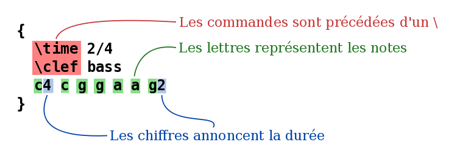
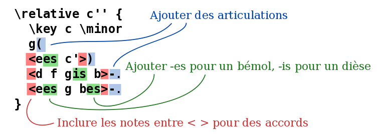
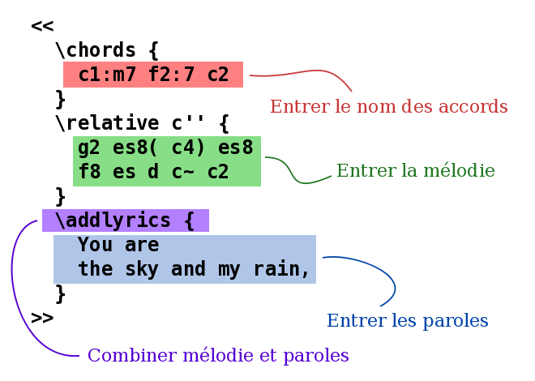
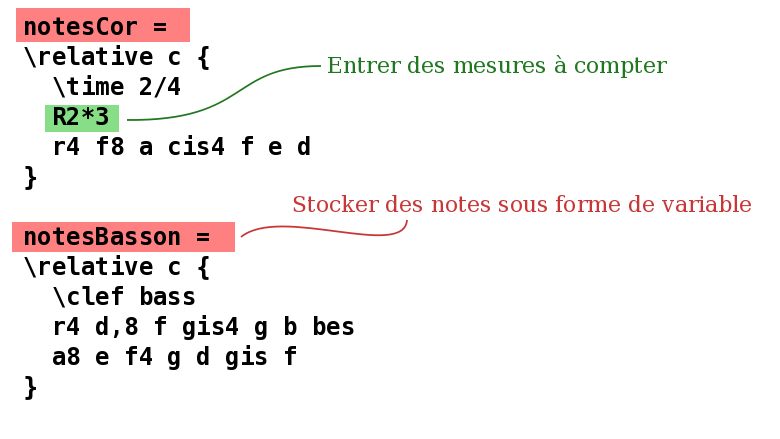
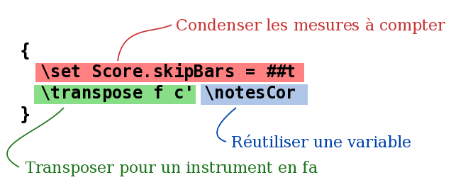
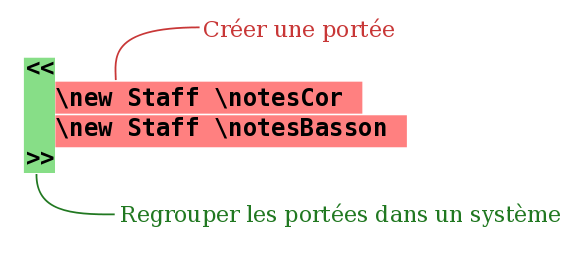

Entrée sous forme de texte
« Compilation » de la musique

(cliquez pour agrandir)
LilyPond est un système de compilation : il opère sur un fichier texte contenant les notes. Le résultat produit en sortie peut être vu à l’écran ou imprimé. De ce point de vue, LilyPond est plus proche d’un langage de programmation qu’un logiciel d’édition de partition avec une interface graphique.
On n’écrit pas la musique en glissant des notes depuis une barre d’outils et en les plaçant sur une partition se constituant petit à petit, mais en écrivant du texte qui la décrit. Ce texte est interprété – ou compilé – par LilyPond, produisant une belle partition de musique.
Cette façon de faire peut demander aux habitués des interfaces graphiques l’apprentissage d’une nouvelle façon de travailler, mais les résultats en valent vraiment la peine !
Note : Nous ne présentons ici qu’un rapide aperçu du langage de LilyPond – ce n’est pas si compliqué que ça en a l’air ! Ce n’est pas la peine de comprendre ces exemples en détail, notre manuel d’initiation aborde d’une façon progressive tout ceci et bien d’autres choses encore.
C’est simple comme bonjour
Les notes sont codées sous forme de lettres et de nombres. Les commandes spéciales commencent par un antislash.


Les altérations sont obtenues avec différents suffixes : is pour
dièse, es pour bémol – ce sont des noms de note hollandais,
d’autres langues sont disponibles. LilyPond détermine où placer les
signes d’altération.


Musique pop
Ajoutez des accords et des paroles pour obtenir une chanson :


Matériel d’orchestre
Le fichier source contient les notes de la pièce. Le conducteur et les parties séparées peuvent être réalisés à partir de la même source ; ainsi, la modification d’une note se répercute toujours à la fois sur les parties et le conducteur. Pour pouvoir utiliser la même musique à plusieurs endroits, celle-ci est stockée dans une variable, c’est-à-dire qu’on lui attribue un nom.

Cette variable est ensuite utilisée dans une partie séparée – ici transposée, avec les mesures de silence condensées.


La même variable est réutilisée dans le conducteur, ici en sons réels.


Documentation pour les débutants
Nous admettons que beaucoup d’utilisateurs trouvent un peu étrange cette façon de saisir la musique. Pour cette raison, nous avons écrit une documentation complète d’initiation, à commencer par le manuel d’Initiation.
Il arrive que de nouveaux utilisateurs sont embrouillés par certains aspects de LilyPond. S’il vous plaît, lisez le manuel d’initiation avant de douter du comportement de LilyPond.
De plus amples informations sont disponibles à la page Manuels.
Ben Lemon, utilisateur de LilyPond, a réalisé plusieurs tutoriels audiovisuels qui s’adressent aux nouveaux utilisateurs et sont visibles sur son blog.
Environnements d’édition confortables

(cliquez pour agrandir)
L’objectif principal de LilyPond est de graver des partitions de qualité optimale, et le développement d’une interface utilisateur graphique nous détournerait de cet objectif. Cependant, d’autres projets visent à faciliter l’édition de fichiers LilyPond.
Certains environnements d’édition incluent la coloration de la syntaxe, le complètement automatique des commandes, et des modèles prédéfinis. D’autres programmes proposent même une interface utilisateur graphique (GUI) qui permet la manipulation directe des objets graphiques d’une partition. Pour plus de détails, voir Facilités d’édition.
Et ensuite ?
Vous êtes désormais prêt(e) à télécharger LilyPond. Si vous n’êtes toujours pas convaincu(e), examinez les Facilités d’édition.